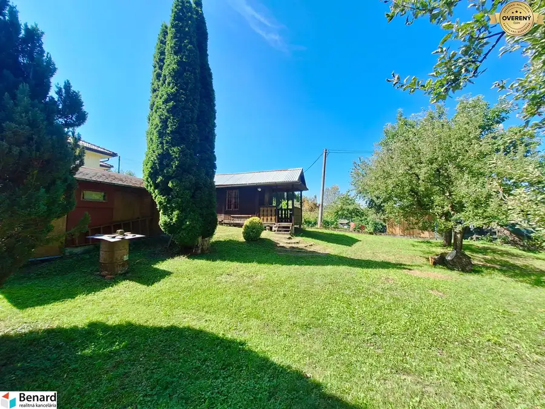
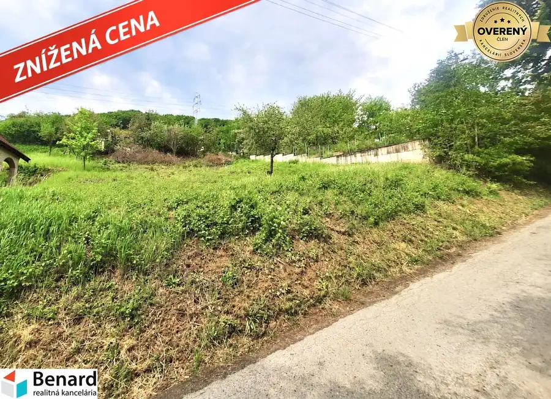
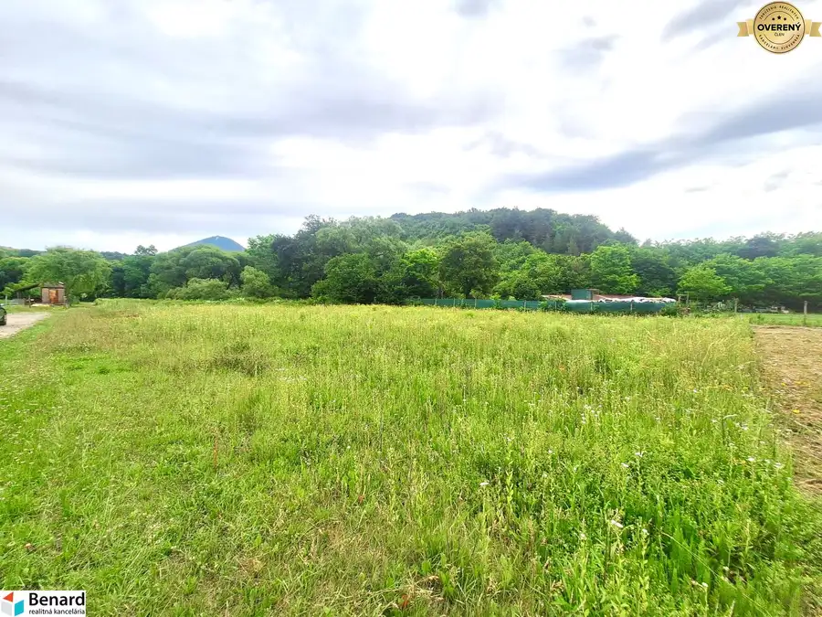

Zľava z ceny možna chalupa, pozemok 15 árov, maria Huta
Gelnica
- Dispozícia3-izbový
- Plocha129 m²
- Poschodie0. z 1
- Stavpôvodný
- Vlastníctvoosobné
O nehnuteľnosti
BENARD reality ponúka na predaj útulnú 3-izbovú chalupu (rodinný dom) v malebnej lokalite Mária Huta, ktorá spája pokoj vidieka, blízkosť prírody a pohodlnú dostupnosť do centra Gelnice. Mária Huta patrí medzi najpokojnejšie rezidenčné lokality v okolí Gelnice, je to lokalita s minimálnou premávkou a komornou atmosférou pripomína skôr rekreačnú oblasť a ponúka ideálne podmienky na chalupárčenie, víkendový oddych aj celoročné bývanie.
Nehnuteľnosť je v pôvodnom stave, no je priebežne udržiavaná a obývateľná. Poslúži ako víkendová chalupa aj rodinný dom na celoročné bývanie, pričom rekonštrukciu si môžete prispôsobiť svojim potrebám.
Kúpna cena je 79.999eur, ale dohoda je určite možná.
Pozemok má 1502 m2. Nachádza sa v tichej obytnej časti mesta mimo hlavného dopravného ťahu s dostatkom súkromia a príjemným prírodným prostredím a výhľadmi.
V dome je zavedený aj miestny zdroj – tzv. banská voda (nie verejný vodovod), ktorá je v tejto oblasti bežne využívaná a predstavuje praktické riešenie pre rekreačné aj každodenné využitie. Zároveň je v blízkosti dostupný verejný vodovod, čo ponúka možnosť budúceho napojenia podľa preferencií nového majiteľa.
Gelnica je od mesta Prešov vzdialená cca 38 km, od Košíc cca 42 km.
Pozostáva: vstupná chodba, kuchyňa, dve väčšie a jedna menšia izba, tiež kúpeľňa a komora.
Dom je čiastočne podpivničený (dve oddelené pivnice), tiež je tu pôjd, veranda (gánok) a na pozemku garáž.
- osobné vlastníctvo, financovanie hypotékou možné (pomôžeme vám s jej vybavením)
- pozemok 1502 m2 (rovinatý, druhá časť pozemku je mierne svahovitá)
- zastavaná plocha domu - 129 m2 (cca 13 x 10 m)
- zastavaná plocha garáže - 27 m2 (cca 4 x 6 m)
- stavebný materiál - drevený dom, omietnutý
- strecha - lepenka (cca 10 rokov)
- vykurovanie - kachľová pec v každej miestnosti, elektrická gamatka (kuchyňa, menšia izba)
- komín (20 rokov)
- bojler (7 rokov)
- drevené podlahové dosky, tzv. dile (izby), betónová podlaha (kuchyňa), keramická dlažba (kúpeľňa)
- okná - pôvodné drevené
- inžinierske siete (plyn, elektrina), možnosť napojenia na verejný vodovod
- septik
- prístup k domu po asfaltovej ceste
- momentálne nízke udržiavacie náklady cca 30eur (elektrika, plyn)
V prípade záujmu je možné v dome ponechať komplet nábytok a zariadenie.
V meste sa nachádza materská a základná škola, potraviny TESCO, FRESH, železničná stanica a ďalšia základná občianská vybavenosť.
Ak máte záujem o obhliadku prípadne potrebujete viac informácii nájdete nás v realitnom centre na Slovenskej ul. č. 8 v Prešove, prípadne mailom na alebo na telefónnom čísle
ZADARMO K TEJTO NEHNUTEĽNOSTI DOSTANETE:
¬ inzerovanie nehnuteľnosti na najsledovanejších realitných portáloch a v miestnych novinách;
¬ preverenie právneho stavu a tiarch danej nehnuteľnosti;
¬ vysvetlenie problémov záložných tiarch, vecných bremien a pod.;
¬ právny servis zabezpečený právnikom s dlhoročnými skúsenosťami;
¬ kópiu LV prípadne katastrálnej mapy s kolkom na právne účely;
¬ poplatky za overenie podpisov na zmluvách u notára;
¬ správny poplatok za vklad vlastníckeho práva do katastra vo výške 100,-€
¬ realitné, daňové a právne poradenstvo;
¬ zabezpečenie znalca na vypracovania znaleckého posudku;
¬ vypracovanie ponúk na zabezpečenie úveru u nášho hypotekárneho odborníka, ktorý spolupracuje s viacerými bankami
Parametre
| Rozloha pozemku | 1502 m² |
|---|---|
| Zastavaná plocha | 129 m² |
| Úžitková plocha | 129 m² |
| Poschodie | prízemie |
| Počet poschodí | 1 |
| Počet izieb | 3 |
| Vlastníctvo | osobné |
| Stav | pôvodný |
| Voda | nie |
| El. napätie | 230/400V |
| Plyn | áno |
| Kanalizácia | septik |
| Kúpeľňa | vaňa |
| Vykurovanie | vlastné – kombinované |
| Terasa | áno |
| Pivnica | áno |
| Garáž | áno |
| Inžinierske siete | áno |
| Postavené z | drevostavba |
| Zateplený objekt | nie |
| Strecha | po rekonštrukcii |
| Energetický certifikát | nie |
| Okná | drevené |
| Terén | rovina |
| Prístupová cesta | asfaltová cesta |
| Dátum zverejnenia | 20. 4. 2026 |
Kde to je
Mohlo by Vás zaujímať

Pozemok9 81 999 €Na predaj pozemok s inžinierskymi sieťami, 973 m2, Kokošovce pri po Kokošovce 973 m² Ponúkame na predaj pekný veľký pozemok o rozlohe 973 m2 v Kokošovciach pri Prešove. Momentálne sa využíva ako záhrada, ale je vhodný aj na stavbu…
Pozemok10 119 999 €Pozemok, Prešov, s inžinierskými sieťami, 806m2,pod Wilec Hôrkou Prešov 806 m² BENARD reality ponúka na predaj pozemok priamo v meste Prešov, v časti pod Wilec Hôrkou. Pozemok sa nachádza v zastavanej časti mesta s možnosťou…
Pozemok10 39 999 €Nová cena na predaj investičný pozemok, 1443m2, Gregorovce Gregorovce 1443 m² Pozemok je v novej rozvíjajúcej sa časti obce, je celý rovinatý. V okolí už stojí viacero novostavieb rodinných domov, čo potvrdzuje atraktivitu…